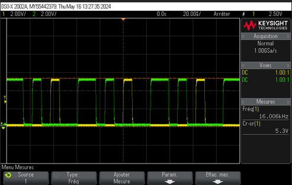

Contexte :
Dans le cadre du parcours BUT1 Réseaux et Télécommunications, j'ai réalisé le travail pratique n°5 lié aux propriétés des fibres optiques en photométrie.
Objectif :
Acquérir et restituer un signal en utilisant les conversions analogique-numérique (CAN) et numérique-analogique (CNA).
Résultat :
En attente de notation
Missions :
Réalisation du montage avec fibre optique (1310 nm)
Configuration du réflectomètre (MT9083A) et du photomètre (JDSU)
Intégration d’une fibre à tester dans le montage
Calcul de l’atténuation en watt et en dB
Codage en Binaire Décalé et Complément à 2
Mesures à 1550 nm et comparaison des résultats
Analyse des résultats pour les fibres directe et inversée
Compte rendu TP
SAE11 - Se sensibiliser à l'hygiène info et à la cybersécurité
Contexte :
Travail pratique en binôme, réalisé pendant une séance de 3 heures.
Objectif :
Implémenter la translation d’adresse avec iptables sous Linux.
Résultat :
Note : 12.80/20 Moyenne de classe: 11.89/20
Missions :
Expliquer le NAT et le PAT mais aussi présenter Iptables
Activation de l’ip forwarding
Communication avec le routeur
Configuration du NAT
Capture Wireshark
Installation de serveurs Web et FTP
Accès au site internet et serveur FTP
Observation du réseau avec Wireshark
Configuration de ping entre deux PC
Compte rendu
Programmation - Portfolio
Développer un site web en HTML et CSS
Contexte :
Projet de développement web réalisé individuellement, mettant en œuvre les langages de base HTML (Hypertext Markup Language) et CSS (Cascading Style Sheets) pour la structure et le design des pages Web.
Objectif :
Développer un site web en utilisant HTML pour le contenu et CSS pour la mise en forme et le design.
Résultat :
Note : 15/20 Moyenne : 12.30/20
Mission :
Construction du contenu en HTML
Mise en place de la structure du site
Intégration des informations nécessaires dans le site
Utilisation de CSS pour la conception et la mise en page
Amélioration de l'apparence visuelle du site
Projets Semestre 2

Télécommunications
Mise en place d’un signal analogique-numérique (CAN) et restitution numérique-analogique (CNA)
Contexte :
Travail pratique en binôme suivant les consignes du professeur, réalisé en une séance de TP.
Objectif :
Acquérir et restituer un signal en utilisant les conversions analogique-numérique (CAN) et numérique-analogique (CNA).
Résultat :
En attente de notation
Missions :
Téléchargement et exécution du fichier “TP5 CAN et CNA”
Mise en œuvre et génération d'un signal continu à 2.04V.
Étude du codage avec Bit de Signe
Conversion de signal et débit
Codage en Binaire Décalé et Complément à 2
Modification de la résolution du CAN
Transmission avec Multiplexage Temporel
Restitution du signal en réception
Compte rendu
Réseaux - SAE21
Mise en place de la fonctionnalité de translation d’adresse avec iptables sous Linux
Contexte :
Travail pratique en binôme, réalisé pendant une séance de 3 heures.
Objectif :
Implémenter la translation d’adresse avec iptables sous Linux.
Résultat :
En attente de notation
Missions :
Expliquer le NAT et le PAT mais aussi présenter Iptables
Activation de l’ip forwarding
Communication avec le routeur
Configuration du NAT
Capture Wireshark
Installation de serveurs Web et FTP
Accès au site internet et serveur FTP
Observation du réseau avec Wireshark
Configuration de ping entre deux PC
Notre comptre rendu
Programmation - WEB
Développer un jeu de mémoire en ligne à l'aide des langages html, css et php
Contexte :
Travail pratique, réalisé en quatre séances et découpé en deux grandes parties
Objectif :
Apprendre et comprendre le language PHP
Résultat :
En attente de notation
Mission :
Générer un plateau de jeu
Charger et récupérer les émoticônes
Afficher un plateau de jeu
Récupérer le ou les derniers choix
Récupérer la liste des émoticônes
Mettre à jour l'affichage du plateau de jeu
Retourner les deux premières cartes choisies
Gestion d'une paire de cartes retournées identique
Modifications finales pour continuer et terminer le jeu
Pour découvrir le jeu !
Concevoir une infrastructure réseau pour une petite entreprise - SAE24
Développer un jeu de mémoire en ligne à l'aide des langages html, css et php
Contexte :
Travail en groupe de 4 étudiants sur deux semaines, réalisé en séances de TP.
Objectif :
Mettre en place une infrastructure réseau avec plusieurs services et des mesures de sécurité pour le service DHCP.
Résultat :
En cours
Mission :
Configuration de VLAN et d'un switch
Mise en place du Wifi et d'un routeur de périphérie
Installation de serveurs Windows (Active Directory) et Linux
Mise en place d'un serveur téléphonique
Installation d'un serveur web
Configuration du DHCP avec suivi des logs et protection contre les attaques (DHCP spoofing, DHCP starvation)